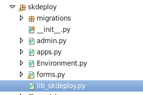

4. WEB平台开发指南¶
4.1. 环境说明¶
系统：centos 7 、windows10、macos
python环境：python 3.7最新版本。 强烈建议用virtualenv 进行python虚拟机环境管理
web框架：django 2.2
IDE：Eclipse 2019-06以上版本&pydev7.4或以上版本（推荐）；或Pycharm企业版
数据库：mysql5.7 或以上
中间件：redis最新版本
前端框架：adminlte bootstrap echart
4.2. 目录规范¶
4.2.1. 一级子目录说明¶
skipper/ #项目主目录
|-- docs #文档目录
|-- lib #公共库目录
|-- logs #日志目录
|-- scripts #脚本目录
|-- skapp01 #django app以sk前缀开头
|-- skapp02
|-- static #静态文件和插件目录
`-- templates #模板目录
4.2.2. 二级子目录-模板目录¶
用于存放所有app的html文件的目录
[root@localhost skipper]# tree -d -L 1 templates/
templates/
|-- skaccounts
|-- skcmdb
|-- skconfig
|-- skdeploy
|-- skdomain
`-- sktask
4.2.3. 二级子目录-静态文件目录¶
用于存放所有项目公共静态文件和第三方前端插件的目录
[root@localhost skipper]# tree -d -L 1 static/
static/
|-- bootstrap
|-- css
|-- dist
|-- font-awesome
|-- ionicons
|-- js
|-- layer
`-- plugins
4.3. 命名规范¶
4.3.1. 基本原则¶
命名要尽量保证代码的可读性和复用性；
其中可读性要尽量通过对象名称命名知道命名对象的类型和用途；
复用性保证代码复用到其他地方时候，对象名称尽可能最小修改原则
4.3.2. 代码和文件命名¶
4.3.2.1. django app命名¶
4.3.2.2. Models class命名¶
- 第一个字母大写，若class由多个词组组合，每个词第一个字母大写
class ProjectGroup(models.Model):
name = models.CharField(max_length=100)
def __unicode__(self):
return self.name
4.3.2.3. forms class命名¶
- 若表单类继承ModelsFrom 命名规范如下
“Models class名称”+下划线+“form”
class Project_form(forms.ModelForm): class Meta: model = Project
4.3.2.4. urls命名¶
url规则:models表对象名称/操作方法/自定义;url别名命名与视图函数一致
url(r'^Project/add/$', Project.Project_add, name='Project_add'),
4.3.2.5. views命名规范¶
- views函数命名规则：对象名称+操作方法
url(r'^Project/add/$', Project.Project_add, name='Project_add'),
- views文件命名规则：“对象名称.py”
- 原则上每个数据库表对象的函数集合单独用一个视图处理文件，如所有针对Project表对象的处理视图函数，都可以放到Project.py文件。对于视图处理函数数量较少的app可以统一将视图处理函数放到views.py文件
4.3.2.6. templates命名¶
模板html文件命名规范：视图函数名称.html
详见skworkorders app对应的url 视图 templates文件命名
4.3.2.7. 变量命名¶
- 变量命名基本原则
变量命名要尽量保证代码的可读性和复用性；
其中可读性要尽量通过变量名称知道变量类型和用途；
复用性保证代码复用到其他地方时候，变量名称尽可能最小修改原则
多个词组组成的变量需要在不同的词之间加下划线分割。
{kind=link}
4.3.3. 示例¶
参考skworkorders项目命名
4.4. 私有库文件和脚本使用说明¶
私有库文件命名规范：lib_app名称；私有库文件主要是存放一些app的私有函数和类、私有库文件放到app自身的文件夹里面。如下图
其他django app若需复用，请拷贝所属app的自有库文件进行维护
脚本文件命名规范：sc_app名称；存放到所属app主目录，主要用于本app调用的功能脚本。
4.5. 配置文件规范命¶
所有app牵涉到的配置文件，一律放到”skipper_*.conf”；
配置文件读取和写入参考现有skconfig模块或django的settings文件；
配置文件区分开发配置文件（skstack_dev.conf）和生产配置文件(skstack_prod.conf)，若两个文件同时存在 优先使用skstack_prod.conf；详见settings关于配置文件的引用方式。
4.6. 日志规范¶
日志格式和规范参考在settings里面LOGGING参数的skworkorders app日志定义 。
需要记录时间、日志级别、消息内容。
请遵循现有的日志记录规范，原则上每个app单独使用一个日志文件。
4.7. 静态文件和前端¶
4.8. Resful api¶
4.8.1. 概述¶
Resful api 主要用于外部平台获取skstack里面的资产数据，和接口调用。
- 格式
http(s)://hosts：port/AppName/对象名称/方法名/版本号/?token=xxx&（对象属性）
- 示例
- 获取cmdb上某个idc上某个ip的主机信息https://192.168.1.10:8000 /skcmdb/hosts/get/v0/?token=xxxxxx&ip=x.x.x.x&idc=xxx
4.8.2. api说明¶
- api文件命名和目录规范
接口视图模块命名：api_模块名称.py，位于所属django app主目录
- 版本号
- 方法名
GET （SELECT）：从服务器检索特定资源，或资源列表。
POST （CREATE）：在服务器上创建一个新的资源。
PUT （UPDATE）：更新服务器上的资源，提供整个资源。
DELETE （DELETE）：从服务器删除资源。
- 对象名称
Api对外接口的提供访问的对象 比如cmdb资产 的主机信息 idc信息等。
- 对象属性
需要查询对象的属性参数